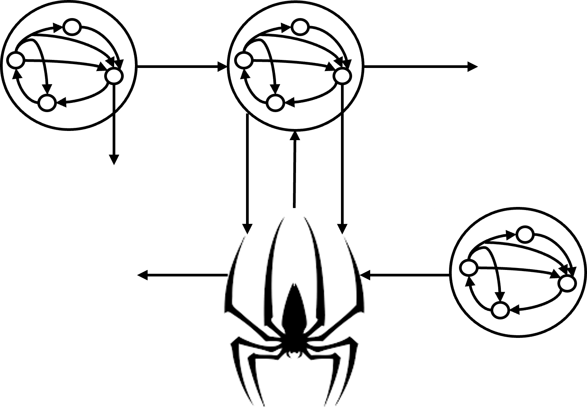
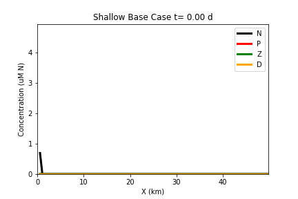

The Peter-Parker Model
The Peter-Parker Model is a new biophysical model I developed during my PhD which combines a Total Exchange Flow TEF box model first developed by Parker MacCready with a
Nutrient-Phytoplankton-Zooplankton-Detritus (NPZD) model, the likes of which were first developed by Peter J.S. Franks. Github repository: lmengel422/The-Peter-Parker-Model.
The Peter-Parker Model vs The Sandman (settling detritus vs settling tracer)

Using timescales, we investigated how the interaction between exchange flow and particle sinking leads to Estuarine Turbidity Maxima by modeling a sinking tracer in an idealized box model of the Total Exchange Flow (TEF).
We then focus on the role of ecology in ETM formation through the use of The Peter-Parker Model focusing on the sinking detritus term.
Engel, L.; Stacey, M. Timescales of Ecological Processes, Settling, and Estuarine Transport to Create Estuarine Turbidity Maxima: An Application of the Peter–Parker Model. Water 2024, 16, 2084. https://doi.org/10.3390/w16152084
The Peter-Parker Model vs Nutrient Loading

Sensitivity analysis of biological and physical parameters in the Peter-Parker Model to see their influence on phytoplankton bloom development. In prep.
Channel-Shoal Interactions
We investigated how intermittency in channel-shoal exchange affects phytoplankton blooms using a two water columns biophysical model representing San Francisco Bay. Github repository: lmengel422/Channel-Shoal-Public
Engel, L., Lucas, L. & Stacey, M. The Role of Spring-Neap Phasing of Intermittent Lateral Exchange in the Ecosystem of a Channel-Shoal Estuary. Estuaries and Coasts 48, 22 (2025). https://doi.org/10.1007/s12237-024-01434-8 a>